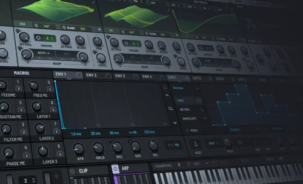
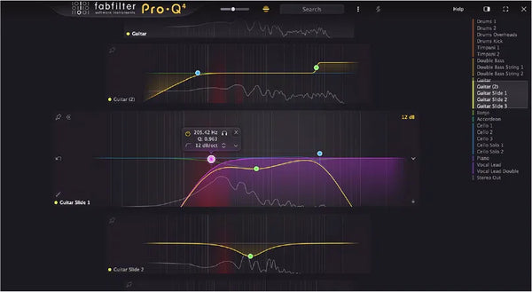

VST Плагины
VST-плагины — это программные модули, которые расширяют возможности вашей цифровой звуковой рабочей станции (DAW: FL Studio, Ableton Live, Reaper и т.п.)
Список плагинов невероятно огромен. Зачастую один плагин может быть эмулятором синтезатора со встроенными аудио эффектами
КАКИЕ ЕСТЬ ПЛАГИНЫ?
-
VST-инструменты (VSTi). Генерируют звук. Сюда относятся синтезаторы.
-
VST-эффекты (VST FX). Обрабатывают уже записанный звук. Это эквалайзеры, компрессоры, ревербераторы, дилеи, дисторшны, фейзеры, фильтры, питч-шифтеры и многое другое.
-
VST-плагины для работы с MIDI. Помогают управлять нотами и другими MIDI-данными.
Самый популярный плагин эквалайзер это fabfilter Pro-Q4

Не найдется человека, который увлекается музыкой и не знает этот шикарный, удобный и многофункциональный плагин,но к сожалению он не будет работать без секвенсора